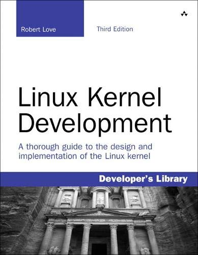
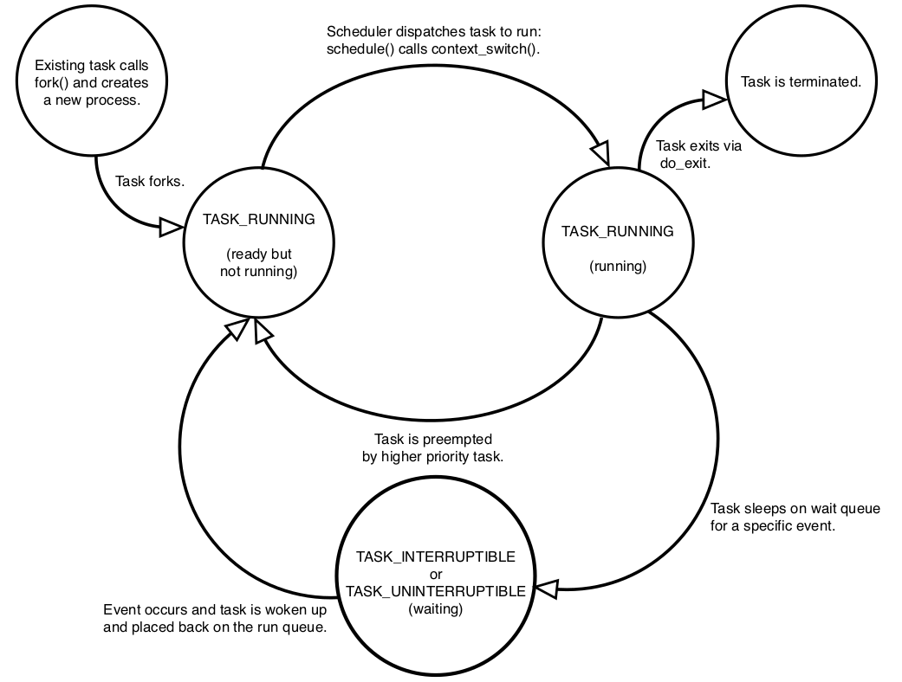
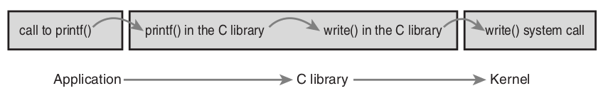
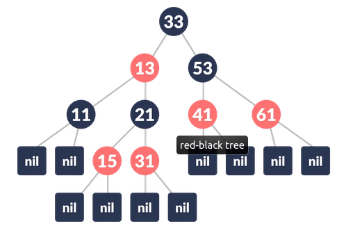
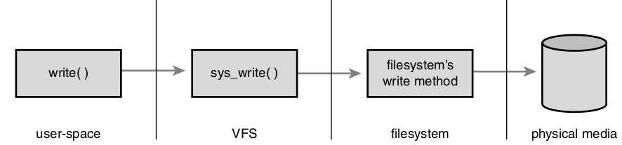
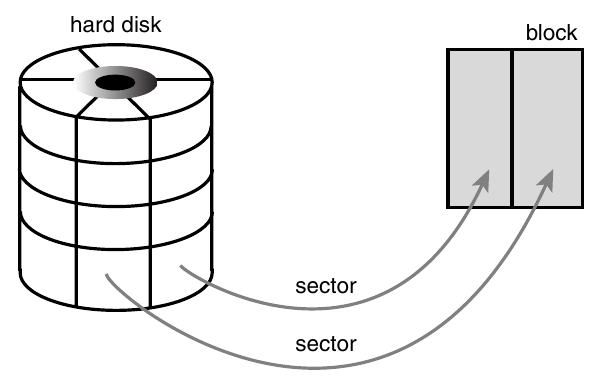
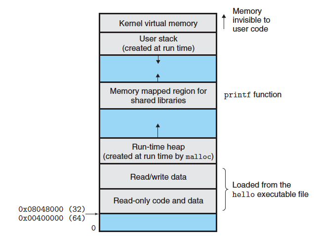

Linux Kernel Development¶
Robert Love, 2010
{kind=link}
Process Management¶
The kernel does not an internal representation for threads. Actually it does not find threads to be that different then processes.
All processes are stored in a doubly-linked list where each element is a descriptor of type struct task_struct. Additionally each processes gets assigned an opaque unique identification called pid 1, which is used as an indexk
{kind=link}
Usually when the kernel operates on processes, it accesses directly the task_struct of the target process. It is quite common to edit the values associated with a certain process, often that is the currently executing process. Henceforth, a mechanism for acquiring it is provided - the current() macro. Its implementation is architechture specific and depends on other factors discussed later.
In order to access the task_struct of a process, firstly the struct thread_info must be acquired and then access the other, which is pointed by one of the members of thread info. It is usually stored at the bottom or the top of the kernel stack, or a pointer to it is stored in a register, depending on the specific arch.
Each process is in exactly one of the following states:
TASK_RUNNING- The task is in the run queue, meaning that it is either runable or actually running
TASK_INTERRUPTIBLE- The task is blocked and resides in a wait queue and awaits for a specific event, which will interrupt its sleep. Also, if it receives a signal, it might awake prematurely.
TASK_UNINTERRUPTIBLE- Same as previous but cannot wake up prematurely.
__TASK_TRACED- The task is being traced.
__TASK_STOPPED- The task is not allowed to execute. Usually follows aSIGSTOPor similar.
The transition is illustrated here:
{kind=link}
The process state could be modified by the set_task_task() and __set_task_state() macros.
The first process (pid = 1) is named init. It starts executing at the last stage of the boot process. Its struct task is statically allocated (called init_task).
Creation¶
The operation of process initialization is twofold - first, fork() creates a child process with copied parent properties and data, and then exec() loads a new executable and starts executing it.
Note
Instead of actually copying the parent’s address space and other data, a Copy-On-Write methodology is used, meaning that until an actual write operation, the “copied” resources are actually shared between the parent and its child.
The callstack when executing fork() eventually looks like that:
1.
fork ()2.clone ()3.do_fork ()4.copy_process ()– This function performs the majority of the work
It duplicates the descriptors of the parent (
struct task_struct,struct thread_info)Updates some of the values of these descriptors to initial or poison values
Sets the process to
TASK_UNINTERRUPTIBLEAllocates a pid
Depending on the passed flag configuration the resources are either shared or cloned.
Note
As we mentioned earlier, threads and processes are not so different in kernelland in terms of representation. This is clearly seen here, clone(SIGCHLD, 0); is called from “regular” fork(), whilst clone(CLONE_VM, CLONE_FS, CLONE_FILES, CLONE_SIGHAND, 0); is called when creating a thread.
In the kernel, there exist a notion of solely kernel-executing threads, which do not context switch into userland. Furthermore, they do not have their own address space (their mm pointer equals NULL). All of them are forked off the kthreadd. (The interface is defined in <linux/kthread.h>).
Termination¶
Process termination is handled mostly by the do_exit() function (kernel/exit.c).
Sets flag in the
task_structof the process which denotes that the process is exiting.Removes kernel timers associated with the process.
Releases the address space. If the cound of processes which use it equals 0, it is also destroyed.
Dequeue from IPC semaphores.
Decrements the usage count of objects related to file descriptors and other file system data.
Stores a copy of the exit code.
Notifies the parent of the process’ untimely demise.
Calls
schedule(), which performs a context switch. The process never gets scheduled again, and therefor it never returns from theschedule()call.
A problem arises when the parent exits before the child, the child will forever remain a zobie. The solution is to reparent either to another process from the same thread group, or to the init process itself.
Footnotes
- 1
An opaque type is a type whose concrete structure is not exposed, enforcing information hiding.
Process Scheduling¶
The fundamental decision which the scheduler has to make is the following: Given a set of processes, which one should execute now?
Multitasking - the art of interleaving execution of multiple tasks, is based on either preemptive or cooperative multitasking scheme.
- Preemptive multitasking
The scheduler has full control over which process executes and when it executes. It has the power to cease the execution of process A and to resume the execution of process B, and then to repeat this same action with it after some time. This involuntary suspencion is called preemption. This mechanism is based on a value (usually referred to as timeslice or something along the lines), which represents the amount of time which the process has to execute. The timeslice may be preset or dynamically calculated.
- Cooperative multitasking
Rather than having full control over the current process, the scheduler delegates these power to each and every process. Instead of being forced to “pause” (or rather - directly suspended), the process decides on its own when to yield, when to allow other processes to get some CPU time. The negative possibilities are apparent - a process may decide not to yield… ever.
Note
For the couple decades systems utilizing cooperative multitasking are not prevalent. For obvious reasons.
Before Linux 2.6.23, the scheduler had not been transformed since its original implementation. TODO: Add description of original scheduler. The transformation resulted in what is nowadays known as the O(1) scheduler. It improves on the limitations of the original scheduler, by introducing a constant-time algorithm for timeslice calculation, as well as adding per-processor run queues.
However, although the O(1) completety outperforms the previous scheduler in regular tasks, when it comes to interactive programs (ones which expect used input, i.e desktop applications), it was kind of bad. Therefoce a new concept turned up and it resulted in the Completely Fair Scheduler which is currently being used.
Scheduler Policy¶
- These are the rules by which new processes are picked and ran. It has to satisfy two goals:
Low latency
High throughput
Each process could be classfied in one the following two categories:
- I/O Bound
Spend most of their time in submitting and waiting on I/O requests. Therefore, it is running (and runnable) for only short periods of time, because it has to block, while waiting for response. Example for I/O bound process is each and every GUI application ever.
or
- CPU Bound
Spend most of their time executing instructions. Generally executed until preempted (do not block often). An example is the program ssh-keygen.
Note
Although most of the times processes are more of one type than the other, it could have characteristics of both.
Prioritizing¶
A common scheme for scheduling is based on the processes’ priority. Higher priority processes are scheduled first, followed by a round-robin walk-through of the low-priority (if they equal value, of couse). The higher priority value might denote either preference in scheduling or longer timeslices.
Linux implements two separate disjoint priority values - nice and real-time priority. The first one marks how nice a process is to others, or how willing it is to allow others to go first. It is a value in the range [-20; 20) and the higher the value, the lower the priority. The real-time priority on the other hand is a value in the range [0; 100); the higher the value, the higher the priority. Usually, real-time processes have bigger values.
Timeslices¶
The CFS caculates timeslices in a unique way - instead of assigning actual values (i.e 10ms), it gives each process a proportion of the CPU based on the priority. Therefore, timeslice = f(load of the system). Moreover, the resulting proportion is mapped with the nice value of the process, which acts as a weight to it. Rather then choosing which process to run based on its priority, the CFS makes this decision relative to the evaluted proportion, where smaller value, means higher chance of being picked.
Note
Timeslice may also be called quantum or CPU slice.
Desired Results of CFS¶
Let’s look at an example: two processes executing in the system. One is highly interactive, thus - I/O bound (P), whilst the other is entirely CPU bound (Q). Since, we would like P to run smoothly from the user-perspective it should have high respond time, meaning it - low latency. Adversly, since Q is much more time consuming than P, we would not take into account latency introduced by the scheduling policy, which means that P should be more prioritized.
In the beginning, the CFS should give each of the two processes 50% of the CPU. However, P waits wait more time than executing, meaning that Q gets more CPU time. Taking all of this into account it is clear that since P runs way less than Q, it should get prioritized when it needs to, when it is being used (remember, it is an interactive process). Therefore, the CFS gives each process a fair execution policy.
Several problems exist in the above-described scheme with which the CFS has to deal with:
- Problem #1
If we try to map the nice value to a timeslice (or %), we end up with a problem. Let’s say that there are two processes - one with 0 nice and one with 20 nice. Let’s also say that 0 nice corresponds to a timeslice of 100ms. With this config, the scheduler will give the first process 100 out of 105 ms and 5ms to the second. However if two processes with 20 nice value exist, each of them would get 5ms. In reality this is 50% of the CPU, but this is inefficient since there should be a context switch each 5ms.
- Problem #2
Two processes - 0 and 1 nice values. Let’s say that 0 nice corresponds to 100ms timeslice. This means that the first process gets 100ms and the second - 95ms, which is a 5% difference. If we change the nice-timeslice mapping, to
0 nice -> 10ms, the processes get 10ms and 5ms respectively, which is a 50% difference. This means that “nicing a process down” has very different effects depending on the mapping.- Problem #3
An ability to assign absolute timeslices is desired in kernel time. This is a metric based on the period of the timer tick. TODO: Revisit after Ch. 11 and fill
- Problem #4:
Handling process after wake-up - we would to give a fresly woken up process a higher chance of being scheduled in order to improve interactiveness of I/O bound programs, but this might result in a unfair amount of CPU time.
- Pseudo-solutions
Geomtric nice values (instead of arithmetic)
Decoupled measurement mapping timeslices to timer ticks
- Actual problem
Assigning absolute timeslices yields a constant switching rate, but variable scheduling fairness.
Completely Fair Scheduling Algorithm¶
Since Linux is kinda complex, it allows different scheduling algorithms to coexist and actually operate coherently. This is implemented via sheduling classes, where ach class reprents a different algorithm. Each of them is assigned a priority value that is used when the base scheduler chooses which concrete scheduler to perform its algorithm at a given time (higher priority means higher chance of being picked). Among all scheduler classes, the CFS is set as default (SCHED_NORMAL within the kernel).
- Perfect Multitasking
Rather then running two processes each for 5ms while utilizing 100% of the CPU, in an ideal perfect multitasking CPU we run them for 10ms and each of them gets 50% of the CPU.
This model is impractictal since it does not take switching costs in account.
Firstly, the base proportion is calcaulted - 1 / n (where n is the total # of processes). Following that, instead of assigning a timeslice to each process based on the nice value, CFS uses it to weight the proportion of CPU each process receives.
- Targeted latency
Approximation of the “infinetely small” scheduling duration.
The actual timeslice is calculated according to the target latency - if two tasks with equal priority exist, each of them will execute for 10ms, if five tasks with equal priority exists, each of them will execute for 4 ms, etc.
- Minimum granularity
The minimum amount of time a process may execute. (By default - 1ms).
Note
With higher number of process, the timeslice each of them gets decreases. This means that with infinte # of process, each one of them will get <something-close-to-0> ms. Therefore, minimum granularity is defined as a bare-minumim for each process to execute. However, as the # of processes increases, the fairness of the scheduler drops.
- Revisit Problem #2
With two processes (0 and 5 as nice values) and
target latency = 20ms, then they will get 15ms and 5ms timelices respectively. If, they have 10 and 15 as nice values, the timeslices are again 15ms and 5ms respectively.
Implementation¶
1// include/linux/sched.h
2
3struct sched_entity {
4 struct load_weight load;
5 struct rb_node run_node;
6 struct list_head group_node;
7 unsigned int on_rq;
8
9 u64 exec_start;
10 u64 sum_exec_runtime;
11 u64 vruntime;
12 u64 prev_sum_exec_runtime;
13
14 u64 last_wakeup;
15 u64 avg_overlap;
16
17 u64 nr_migrations;
18
19 u64 start_runtime;
20 u64 avg_wakeup;
21
22 u64 avg_running;
23 [...]
24};
- Virtual runtime -
vruntime The actual time that the process spent running (weighted) in nanoseconds. This is used to approximate the “perfect multitasking CPU”. In the ideal case it would not be useful, since all of the processes would have gotten the same amount of the CPU share. There is some accounting needed in order to keep it up-to-date. It is implemented in the
update_curr()function.
1// kernel/sched_fair.c
2
3static void update_curr(struct cfs_rq *cfs_rq)
4{
5 struct sched_entity *curr = cfs_rq->curr;
6 u64 now = rq_of(cfs_rq)->clock;
7 unsigned long delta_exec;
8
9 if (unlikely(!curr))
10 return;
11
12 /*
13 * Get the amount of time the current task was running
14 * since the last time we changed load (this cannot
15 * overflow on 32 bits):
16 */
17 delta_exec = (unsigned long)(now - curr->exec_start);
18 if (!delta_exec)
19 return;
20
21 __update_curr(cfs_rq, curr, delta_exec);
22 curr->exec_start = now;
23
24 if (entity_is_task(curr)) {
25 struct task_struct *curtask = task_of(curr);
26
27 trace_sched_stat_runtime(curtask, delta_exec, curr->vruntime);
28 cpuacct_charge(curtask, delta_exec);
29 account_group_exec_runtime(curtask, delta_exec);
30 }
31 }
Note
As far as I see, there has not been a huge change until now (5.14.7). The only notable difference is that the __update_curr() function has been removed and its body has been incorporated directly inside update_curr.
The above function is called periodically both when a process becomes eligible for running and when it gets blocked. Therefore, the vruntime is accurate.
Therefore, it directly maps the fairness with which the process has been treated, the algorithm for picking the next process to schedule becomes - choose the process with lowest vruntime value. Furthermore, the list of runnable processes is organised in a rbtree in order to efficiently locate the one with minumim vruntime value, so the actual “pick-next-process” operation becomes “go left until nothing is left” :). If has not been simplified enough, a tree walk isn’t even required since the leftmost element is cached in the CPU runqueue (see __pick_next_entity()).
1// kernel/sched_fair.c
2
3static struct sched_entity *__pick_next_entity(struct cfs_rq *cfs_rq)
4{
5 struct rb_node *left = cfs_rq->rb_leftmost;
6
7 if (!left)
8 return NULL;
9
10 return rb_entry(left, struct sched_entity, run_node);
11}
Note
If NULL is returned from __pick_next_entity(), there are no schedulable processes and the idle process is ran.
The functions which add processes in the red-black tree are named enqueue_entity() - updates statistics, and __enqueue_entity() - actual tree modification. This is the same function which caches the leftmost element. It gets executed when a process gets runnable. Logically, dequeue_entity() and __dequeue_entity() are those who handle the entity removing logic, when a process blocks or terminates.
The entry point of the scheduler is schedule() function. This is the abstract high-level routine which everybody calls when they need to “do something with the scheduler”. The most interesting thing that happens is the pick_next_task() function call which selects the next scheduler class to operate.
Waiting and Waking-Up¶
Processor blocking is implemented the following way:
The task marks itself as sleeping
Puts itself in a wait-queue
Removes itself from the red-black tree
Calls
schedule()to select new process
Waking-up is the opposite - runnable, removed from wait-queue and added to the red-black.
Waiting in the kernel is usually done in the following way:
1// q is the wait-queue, we wish to sleep on
2DEFINE_WAIT(wait);
3
4add_wait_queue(q, &wait);
5while (!condition) { // condition is the event that we are waiting for
6 prepare_to_wait(&q, &wait, TASK_INTERRUPTIBLE);
7 if (signal_pending(current)) {
8 // handle
9 }
10
11 schedule();
12}
13
14finish_wait(&wait);
Instantiate an empty wait queue entry called
wait.Add entry to wait queue (
wait -> q).Change process state to
TASK_INTERRUPTIBLEorTASK_UNINTERRIPTIBLE. Moreover, it may add the entry to the wait queue again if needed.Catch spurious wake ups (one which was not caused by the occurance of the specified event).
If the condition is still not correct,
schedule()is called. Thengoto 3.Else, the process’ state is switched to
TASK_RUNNINGand it’s removed from the wait queue.
Important
Usually real kernel code using this mechanism is not that simple. There might be (and almost always are) additional resources that require be taken care of.
Caution
Just because a task is awakened does not mean that the event for which the task is waiting has occured; Sleeping should always be handled in a loop that ensures that the condition for which the process is waiting has actually occurred.

Preemption and Context Switching¶
Handled by the context_switch() function, which
Calls
switch_mm()- Swaps memory mapping of processesCalls
switch_to()- Changes register values and other arch-specific states
Since the actual scheduling policy has to be invoked regularaly and not just manually by calling schedule(), the actual mechanism is by marking a process as “to-be-preempted” - the kernel sets a need_resched flag on it (Actually this value resides inside the thread_info struct). This is done by the scheduler_tick() when the process has be to preempted and by try_to_wake_up() when a higher priority process needs to run. Some utility functions …
Function |
Purpose |
|---|---|
|
Sets flag |
|
Clears flag |
|
Checks flag value |
User space preemption occurs when returning to userland either from an interrupt or from a syscall. The Linux kernel is preemptive. This means that the kernel may preempt itself as long as its state allows it to do so. How do we decide whether it is safe or not? Locks. They are used as zoning markers. If no lock is being held, than the current piece of code being executed is fully reentrant.
This is implemented by a per-process preempt_count stored in struct thread_info. Each time the process acquires a lock, the value is incremented, and each time a lock is released - decremented. This makes sure that when the value equals 0, the kernel is allowed to preempt the current kernel process.
Note
From time to time, there might be the need to disable kernel preemption.
Real-Time Scheduling Policies¶
Other than SCHED_NORMAL, the scheduling classes include SCHED_FIFO and SCHED_RR. SCHED_FIFO always operates before SCHED_NORMAL and does not stop until the task is runnable. Furthermore, it does not utilize timeslices and does not impose time limits. SCHED_RR is similar to SCHED_FIFO with the single exception that it actually has execution time limits.
System Calls¶
Syscalls are the interface for the userland processes provided by the kernel.
The purposes of syscalls are handful. The majority of them are concerned with abstracting hardware resource, which on its own has a couple of benefits/purposes

Security and stability
Allows the kernel to implement virtualization subsystems - multitasking, VM, etc.
Allows user processes to not care about internals
Note
The asmlinkage modifier notifies the compiler to look for the actual argumets only on the stack. Used with all syscalls.
First, each syscall is implemented inside the kernel as sys_{name}. Each syscall is assigned what is known as a syscall number. The way that userland processes use to notify the kernel that they would like some kernel code to execute is by making a software interrupt (int $0x80). It directly triggers the execution of the system call handler - system_call() (defined in arch/include/asm/entry_64.S). However, in order to execute the syscall, the kernel is also required to know the syscall number. In x86 this is passed through the %eax register. After the kernel traps, it simply maps the number to the corresponding syscall and is ready to execute it. Additionally, any arguments passed to the syscall are also transferred using registers. If there number exceeds the limit of 5, a pointer to the userland location where they are stored is passed instead. Return value is put into %eax as well.
Some of the problems related to syscalls are the following:
Aging and Scalability - Once the syscall is implemented and other applications depend on it, there is no going back. Will this API stand the toll of time?
Parameters - The syscall is kernel code - it has super-powers. How sure are you that any parameters passed to it will not damage or corrupt the system?
Access Rights - Does the userland process have access to what it asks for?
Note
Kernel code should never blindly follow userland pointers! If a copy has to be made, always use copy_to_user() or copy_from_user() depending on the situation.
Note
Use <linux/capability.h> and its macro capable() to check whether a userland process has certain capabilities.
System calls are “registered” in libc by using macros defined in the kernel. If we are to register our new syscall - “myfun”, it would look similar to that.
// kernel/sys.c
int myfun(int num, int num2, const char *str);
// lib.h
#define __NR_myfun 283
__syscall3(int, myfun, int, num, int, num2, const char *, str);
// lib.c
#include "lib.h"
void foo(void) {
int myfun_rc = myfun(1, 2, "hihi");
...
}
Kernel Data Structures¶
Linked Lists¶
The kernel provides an intrinsic circular doubly-linked list implemented. It is defined in <linux/list.h> and provides a lot of functionlaities, including
list_add() list_add_tail()list_del() list_del_init()list_move() list_move_tail()list_splice() list_splice_init()list_entry()list_empty()list_for_each() list_for_each_entry()list_for_each_entry_reverse() list_for_each_entry_safe()
Queues¶
The kernel provides a queue implementation, defined in <linux/kfifo.h>. Basic operations are
The size of the queue is required to be a power of 2.
kfifo_alloc() kfifo_init()kfifo_in() kfifo_out()kfifo_out_peek()kfifo_size()kfifo_destroy() kfifo_reset()
Maps¶
Not a general purpose map - is specifically designed to map userspace UID’s to pointers. Additionally, it may also generate this UID. The struct is called struct idr.
idr_init()idr_pre_get()idr_find()idr_remove()
Warning
The struct idr functions return 1 on success and 0 on error!
Trees¶
The kernel implementation of a binary tree is the red-black tree. In order for a binary tree to be considered red-black it has to satisfy the following properties
- Black height of a red-black tree
The number of all black nodes in a given path
All nodes must be either red, or black
All leaf nodes are black
None of the leaf nodes store any data
Each internal nodes have two children
A red parent has two black children
The black height is equal for every subtree
Red-black trees are considered “approximately-” or “semi-” balanced, since they do not corresponds to the definition. However, they still guarantee \(O(\log_{2})\) complexity.
Binary tree is balanced if for each node that it holds, the number of nodes in the left subtree and the number of nodes in the right subtree differ by at most 1.
The kernel red-black tree API resides in <linux/rbtree.h>. The interesting thing about it is that it does not provide an actual insert or search operation, in order to omit the usage of callbacks and comparison functions. This is what they should look like
#include <linux/rbtree.h>
T *rbtree_search(V desired_inner_value) {
struct rb_node *nod = [...];
while (nod) {
struct T *val = rb_entry(nod, struct T, [...] /* container rbtree */);
if (val->inner_value > desired_inner_value)
nod = nod->rb_right;
else if (val->inner_value < desired_inner_value)
nod = nod->rb_left;
else
return val;
}
return NULL;
}
int rbtree_insert(T *entry) {
struct rb_node **nod = &[...]
struct rb_node *parent = NULL;
struct T *temp = NULL;
while (*nod) {
parent = *nod;
temp = rb_entry(*nod, struct T, [...] /* container rbtree */);
if (temp->inner < entry->inner)
nod = &(*temp)->rb_left;
else if (temp->inner > entry->inner)
nod = &(*temp)->rb_right;
else
return ERROR_ALREADY_APPEARS;
}
rb_link_node(nod, parent, temp); // Actual insert modification
rb_insert_color(nod, &[...]); // Rebalancing
}
Interrupt Handling¶
Interrupts replace polling, which incurs overhead. Rather than the CPU checking all hardware devices once in a while, each time a device needs “help” it notifies the CPU using an interrupt. Than the CPU signals the OS about the interrupt, which on its side starts executing the interrupt handler associated with the specific interrupt. Each interrupt has a unique number associated with it, in order to simplify the task of identifying the interrupt and its origin. They are often called IRQ lines. These interrupts are produced asynchronously by “external” hardware. There exist another type of interrups, often called exceptions, synchrounous interrupts, which are produced by the CPU. They are produced during program execution due to an error - division by 0, trap, page falut, etc.
The function that the kernel executes in order to handle an interrupt is usually abbreviated as ISR (= Interrupt Service Routine). It is part of the device driver. They run in a special interrupt context and it is unable to block, thus guarantying that the ISR is atomic. Since an interrupt may happen at any given time, it is important that the code inside the ISR executes quickly in order to return to other kernel operations. However, it is not uncommon that the ISR actually has to perform a lot of work (e.g network drivers).
Therefore, the interrupt processing is split into two
- Top and bottom halves
In the “top” - work is performed immediately upon receive, whereas the “bottom” is ran in a more convenient time. The top-half algorithm is implemented via the interrupt handler.
Firstly, an interrupt handler needs to be registered. This is done with the request_irq() function (include/linux/interrupt.h). One of its parameters is a callback to the handler implementation, which is of type irq_handler_t, defined as
typedef irqreturn_t (*irq_handler_t)(int, void *)
where irqreturn_t is actually int, but the typedef is required in order to preserve backwards compatibility.
Note
The request_irq() may block. Therefore, it should not be called from an interrupt handler (it executes in atomic context).
At the end, handlers are freed using free_irq().
Note
Interrupt handlers are not required to bee reentrant, since they execute in atomic context (as said before).
Warning
Interrupts interrupt processes. They have to be quick and simple. They have to not call any blocking functions and should not busy wait. They hvae to not call functions which may leave the interrupt handlers, before being fully executed, since the scheduler cannot go back to the previous position in the irq handler. Moreover, during interrupts there is an per-CPU interrupt stack of 1 memory page.
Interrupts for the current CPU may be disabled and enabled using local_irq_disable() and local_irq_enable(), but this is not very useful, since by using this pait of utilities, there is no guarantee that in interrupts were enabled in the beginning. Therefore, more common are local_irq_save() and local_irq_restore() which carefully handle the irq flags. Additionally, specific irq lines may be disabled and enabled - disable_irq(), enable_irq().
Note
If disabled_irq() is called two times, then in order to re-enable them, enable_irq() has to be called twice as well.
Tip
If the work is
time sensitive or
related to the hardware or
required to execute in atomic context, without being interrupted
put it inside the interrupt handler. For everything else - the bottom half will do. The fundamental question is “What must be in the top-half and what can be in the bottom half?”.
Bottom halves¶
There are multiple of mechanisms used for deferring work from the interrupt handlers.
softirqUsed for the most time-critical bottom halves. Usually involve a lot of careful and fine-grained locking. Allocated, prioritized and assigned statically. Then the softirq is raised at runtime, usually in the top half. All of the softirqs are checked and handled by
do_softirq().
taskletBasically high-level softirqs - do not require difficult locking policies, but have less priority. The main difference compared to softirqs is that tasklets run on only CPU at a given time, whilst with there might be the case of two of the same softirqs executing concurrently on separate CPUs.
do_softirq()
{
u32 pending;
pending = local_softirq_pending();
if (pending) {
struct softirq_action *h;
/* reset the pending bitmask */
set_softirq_pending(0);
h = softirq_vec;
do {
if (pending & 1)
h->action(h);
h++;
pending >>= 1;
} while (pending);
}
}
Almost always tasklets are good enough for the job and only in extremeley rare cases softirqs are required.
An analog to raised softirq is the scheduled tasklet. This is implemented in tasklet_schedule()
/*
* Obviously pseudo-code :)
*/
tasklet_schedule()
{
if (cas(tasklet->state, TASKLET_SCHED)) {
local_irq_save();
list_add(cpu.tasklet_vec, tasklet);
raise_softirq_with_disabledirq();
local_irq_restore();
}
}
The real operation is handled in the tasklet_action() function. The following is snippet illustrates its jobs.
tasklet_action()
{
local_irq_disable();
struct tasklet *tasklet_list = list_extract(cpu.tasklet_vec);
local_irq_enable();
while (tasklet_list) {
if (tasklet_list->acquire()) {
if atomic (tasklet_list->count) // is it disabled?
goto release;
tasklet_list->state = TASKLET_RUN;
tasklet_list->action();
tasklet_list = tasklet_list->next;
}
release:
tasklet->release();
}
}
Note
There are two types of tasklets - TASKLET_SOFTIRQ and HI_SOFTIRQ. This effectively means that without being statically initialized, all takslets are multiplexed of these two softirqs. The HI_ one has higher priority (ch. include/interrupt.h for the full priority enum).
There exist a per-CPU ksoftirqd thread which supports the handling of softirqs (thus tasklets as well). They are introduced as a compromise between two bad suggestions of handling re-raised softirqs
- Before returning from
do_softirq()perform a check whether any of them have been raised again and execute them if that’s the case.
However, this is highly inefficient since this leaves the userland processes in a bad position - they will have a lot of latency and only interrupts and softirqs will ever execute.
- Do not treat re-raised softirqs specially - just wait until the next
do_softirqcall.
However, this ultimately means that in most cases re-raised softirqs will be handled way to late since this will probably be on the next irq.
Taking all this into account, the kerneldevs add per-CPU kernel thread which looks after the softirqs but does not neglect the userland processes by setting the ksoftirqd’s nice value to 19.
ksoftirq_main()
{
for (;;) {
if (!softirq_pending(cpu))
schedule();
set_current_state(TASK_RUNNING);
while (softirq_pending(cpu)) {
do_softirq();
if (need_resched())
schedule();
}
set_current_state(TASK_INTERRUPTIBLE);
}
}
{kind=link}
Kernel Synchronisation¶
General¶
- Critical section
Code areas which access shared data. Unsafe.
⇒ Atomics, otherwise race condition occurs.
Causes of concurrency in the kernel world
Interrupts, taskelts, softirqs
Sleeping and synchronisation with userland
SMP
Preemption
Primitives¶
- Atomic integer -
atomic_t(32-bit) andatomic64_t Instruction level sync primitives are used.
Many operations are supported, e.g
atomic_set(),atomic_get(),atomic_inc(). Notably, there exist a couple which perform multiple actionsatomic_dec_and_test(),atomic_inc_and_test(), etc.
- Atomic integer -
Note
On most architectures a single word read is atomic. Thus, the atomic_read() has no additional complexities then just returning the value.
Atomic bitwise operations
Modifies bit values on opaque pointers.
test_and_set_bit(),get_bit(), etc.
Caution
Non-atomic bit operation? Consider the case when a set, a following clear instruction are issued. At the end the bit will be 0, but there is no guarantee that it has ever been 1. This is the data race here.
- Spin Locks
Only one thread of execution at a time holds the spin lock.
If another tries to acquire it while the spin lock is contended, the thread spins
Architecture specific. Arch-dependant code is in
asm/spinlock.h, while the kernel API resides inlinux/spinlock.h.If the kernel is configured to not use preemption or the arch is not SMP, then spinlocks are compiled away completely.
Support “regular” API :). No surprises there.
Usually when working with spinlock, the code has to be cautious of bottom-halves, more specifically - whether there is shared data between the current thread of execution and bottom-halves. Thus, there is a function which stops bottom-halves while the spinlock is held, and another which does the opposite.
Reader-writer spinlock -
rwlock_t. Analogous to spin lock, with the exception of separate reader and writer lock/unlock, etc.
{kind=link}
Tip
Rule of tumb Lock data and not code!
Warning
Linux’ spin locks are not recursive - if a thread holding the spin lock, acquires it again, it is automatically in a deadlock.
Note
Spin locks do not sleep - they busy wait. Thus, they might be used in atomic contexts (e.g interrupt handlers).
- Semaphores
Sleeping locks
Well-suited for long-held locks
Only for process context
Multiple semaphore “holders”
1 holder: either mutex or binary semaphore (depending on the usecase)
>= 2 holders: counting semaphore
Enforce limits, but not mutual exclusion
Two primary operations - Proberen (test) and Verhogen (increment)
The former decrements and acquries the semaphore, whereas
the latter increments and releases the semaphore
struct semaphore;sema_init(),down_interruptible(),up(),init_MUTEX(), etc.Also reader-writer semaphore -
struct rw_semaphore
- Mutex
Although, semaphores provide similar capabilities,
struct mutexhas simpler API and better performance.
Tip
Rule of tumb Prefer struct mutex over struct semaphore (even with count limit 1).

- Completion Variable
Conceptually similar to semaphores. Thread A signals thread B when an operation completes
struct completion;init_completion(),wait_for_completion(),complete()Check “sched.c” and “fork.c” for examples.
The Big Kernel Lock
Global spin lock. Yes… The idea was to ease the transition to fine-grained locking during the transition to SMP.
Peculiarities of the BKL
You can sleep while holding it.
Recursive lock.
Only in process context.
- Sequential Locks
Used for accessing shared data.
On each write the sequence number is incremented (atomically). On each read the sequence number is checked before and after the operation. If they mismatch, then the read data is corrupted.
- Barriers
rmb()Read barrier. No reorders of load() operations pass the barrier
wmb()Write barrier. No reorders of store() operations pass the barrier
mb()Read & Write barrier
read_barrier_depends()Only for subsequent loads on which this depends.
Much quicker than
rmb().
Timers and Time Management¶
Real-Time Clock (RTC)
Chip which counts without stopping. Has additional battery in order to keep going while the machine is off.
System Timer
Chip which interrupts the motherboard each HZ hertz
Jiffy (pl. Jiffies)
The kernel notion of time. The number of ticks from the system timer since boot.
Timers
Means for delaying work. Marks certain work to be executed after some time has passed (cannot guarantee that it is exactly precise, but only that is after at least the-given-period time).
Additionally work may be delayed using schedule_timeout(jiffies) which sleeps the task for jiffies time.
Memory Management¶
- Page
The smallest unit of physical memory that the kernel operates on simply because the MMU does that (usually around 4K). Each and every page of physical memory has an associated
struct pagedescribing not its data, but its layout.- Zones
The kernel cannot trat each page equaly, thus separates them into categories or zones. Each is represented as
struct memzone. There are a couple of them - the regular case is calledZONE_NORMAL; there is also the memory used for DMA -ZONE_DMA; the other important one isZONE_HIGHMEM. There existance is solely based on hardware limitations: DMA could be performed only on certain addresses (e.g ISA is 16-bit). Usually the layout is similar to the following -DMA < 16MB,16MB < NORMAL < 896MB,HIGHMEM > 896MB(x86-32). Each zone is represented asstruct zone.- High memory
Some of kernel memory is not permanently mapped - it cannot be addressed. Therefore, there is a memory zone called “high memory”.
Allocating memory¶
There are a couple of different ways for memory allocation. Most of them rely on the page allocation API (check below), which is used for acquiring physical pages. The primary functions are used similarly to the userland malloc(), but have a slight difference.
{kind=link}
Caution
Unlike user-space, the kernel will happilly hang itself if you ask it!
- gfp_t flags
These are flags passed to the allocation functions, which denote the modifiers used - action (how to allocate), zone (where to allocate) and type (predefined combinations of how and where).
- kmalloc()
This is the equivalance the stdlib’s malloc. Other than the required size, a second parameter is passed as well
gfp_t flags. Returns a physically contigous memory.- vmalloc()
Same as
kmalloc(), with the exception that the memory is only virtually contigous, and not necessarily physically contigous.
At the end, memory is deallocated by calling the corresponding function - either kfree() or vfree(), depending on the allocation policy.
Slab Layer¶
Common phenomenon in kernel is keeping a freelist. This involves a preallocated pool of objects which get reused on “free” rather than actually freeing the memory. Thus, a general mechanism was introduced - the slab layer, which is basically a struct-caching layer.
The structure involves a cache, divided into multiple slabs, each of them composed of memory pages. Each slab contains some number of objects, which get cached. This results in 3 possible states - it is either full, empty or partial. When a request is made (allocation), a partial slab is used. If none exist, an empty is used, and if that does not exist as well, a new slab is allocated with the actual MM API.
Slab API
mem_cache_create()mem_cache_destroy()mem_cache_alloc()mem_cache_free()
- Map
If a page is not mapped in kernel space but is required. The
kmapfunction family is used. Additionally atomic variants are provided as well.
Virtual Filesystem¶
The kernel provides an abstracted view to any concrete filesystems that may be implemented until now and in the future. It wrapps the interface provided by them into a general one which is used by the other kernel components when talking to the filesystem layer. The following diagram illustrates this with an example utilizing FUSE.

Additionally, the VFS layer enables different filesystems to communicate with eachother, e.g copy FAT files to ext3.
{kind=link}
Note
The VFS layer is considered a good example of OOP implemented in C.
Summary¶
There are four primary objects which VFS recognises
Superblock - Specific mounted filesystem
Inode - File metadata
Dentry - Single path component
File - Opened file. Associated with a process
Each of them contains a related operations object.
super_operations -
write_inode(),sync_fs()inode_operations -
create(),link()dentry_operations -
d_delete(),d_compare()file_operations -
read(),write()
For the most part, these methods may use the base implementation.
Each registered filesystem is represented as struct file_system_type.
Each mountpoint is represented as struct vfsmount.
Warning
The UNIX fs concepts are physically mapped on disk. VFS is designed to work with these concepts, thus requiring each concrete filesystem to provide them. That is the case even for non-UNIX filesystem such as FAT or NTFS to provide the appearance of these concepts.
Superblock¶
Represented as struct super_block from <linux/fs.h>.
1 struct super_block {
2 struct list_head s_list; /* list of all superblocks */
3 dev_t s_dev; /* identifier */
4 unsigned long s_blocksize; /* block size in bytes */
5 unsigned char s_blocksize_bits; /* block size in bits */
6 unsigned char s_dirt; /* dirty flag */
7 unsigned long long s_maxbytes; /* max file size */
8 struct file_system_type s_type; /* filesystem type */
9 struct super_operations s_op; /* superblock methods */
10 struct dquot_operations *dq_op; /* quota methods */
11 struct quotactl_ops *s_qcop; /* quota control methods */
12 struct export_operations *s_export_op; /* export methods */
13 unsigned long s_flags; /* mount flags */
14 unsigned long s_magic; /* filesystem’s magic number */
15 struct dentry *s_root; /* directory mount point */
16 struct rw_semaphore s_umount; /* unmount semaphore */
17 struct semaphore s_lock; /* superblock semaphore */
18 int s_count; /* superblock ref count */
19 int s_need_sync; /* not-yet-synced flag */
20 atomic_t s_active; /* active reference count */
21 void *s_security; /* security module */
22 struct xattr_handler **s_xattr; /* extended attribute handlers */
23 struct list_head s_inodes; /* list of inodes */
24 struct list_head s_dirty; /* list of dirty inodes */
25 struct list_head s_io; /* list of writebacks */
26 struct list_head s_moreio; /* list of writebacks */
27 struct hlist_head s_anon; /* anonymous dentries */
28 struct list_head s_files; /* list of assigned files */
29 struct list_head s_dentry_lr; /* list of unused dentries */
30 int s_nr_dentry_unused; /* number of dentries in s_dentry_lru */
31 struct block_device *bdev; /* assiciated block device */
32 struct mtd_info *s_mtd; /* memory disk information */
33 struct list_head s_instances; /* instances of this fs */
34 struct quota_info s_dquot; /* quota-specific operations */
35 int s_frozen; /* frozen status */
36 wait_queue_head_t s_wait_unfrozen; /* wait queue on freeze */
37 char s_id[32]; /* text name */
38 void *s_fs_info; /* filesystem-specific info */
39 fmode_t s_mode; /* mount permissions */
40 struct semaphore s_vfs_rename_sem; /* rename semaphore */
41 u32 s_time_gran; /* granularity of timestamps */
42 char *s_subtype; /* subtype name */
43 char *s_options; /* saved mount points */
44 };
One of the key members of the super’s structure is s_op, which is essentially a “vtable” of concrete fs’ operations.
1struct super_operations {
2 /*
3 * create and init an inode under the given fs
4 */
5 struct inode *(*alloc_inode)(struct super_block *);
6
7 /*
8 * deallocate given inode
9 */
10 void (*destroy_inode)(super inode *);
11
12 /*
13 * given inode is modified
14 * used for journaling
15 */
16 void (*dirty_inode)(super inode *);
17
18 /*
19 * write given inode to disk
20 * sync or async depending on wait
21 */
22 int (*write_inode)(super inode *, int wait);
23
24 /*
25 * called when the refcount = 0
26 * the inode is deleted
27 */
28 void (*drop_inode)(struct inode *);
29
30 /*
31 * delete inode from disk
32 */
33 void (*delete_inode)(struct inode *);
34
35 /*
36 * release superblock object; called on unmount
37 * s_lock has be held
38 */
39 void (*put_super)(struct super_block *);
40
41 /*
42 * synchronises the disk version with the memory version of a given superblock
43 * s_lock is required
44 */
45 void (*write_super)(struct super_block *);
46
47 /*
48 * synchronises fs metadata on disk with memory
49 * sync or async depending on wait
50 */
51 int (*sync_fs)(struct super_block *, int wait);
52
53 int (*freeze_fs)(struct super_block *);
54 int (*unfreeze_fs)(struct super_block *);
55 int (*statfs)(struct dentry *, struct kstatfs *);
56 int (*remount_fs)(struct super_block *, int *, char *);
57 void (*clear_inode)(struct inode *);
58 void (*umount_begin)(struct super_block *);
59 int (*show_options)(struct seq_file *, struct vfsmount *);
60 int (*show_stats)(struct seq_file *, struct vfsmount *);
61 ssize_t (*quota_read)(struct super_block *, int, char *, size_t, loff_t);
62 ssize_t (*quota_write)(struct super_block *, int, const char *, size_t, loff_t);
63 int (*bdev_try_to_free_page)(struct super_block *, struct page *, gfp_t);
64 };
Inode¶
Constructed in memory in a manner suitable for the concrete FS. Stores all required information in order to safely manipulate files and directories.
As with struct super_block, there is an operations member.
1struct inode_operations {
2 int (*create) ( ... );
3 struct dentry *(*lookup) ( ... );
4 int (*link) ( ... );
5 int (*unlink) ( ... );
6 int (*symlink) ( ... );
7 int (*mkdir) ( ... );
8 int (*rmdir) ( ... );
9 int (*mknod) ( ... );
10 int (*rename) ( ... );
11 int (*readonly) ( ... );
12 void *(*follow_link) ( ... );
13 void *(*put_link) ( ... );
14 void *(*truncate) ( ... );
15 int *(*permissions) ( ... );
16 int (*setattr) ( ... );
17 int (*getattr) ( ... );
18 int (*setxattr) ( ... );
19 size_t (*getxattr) ( ... );
20 size_t (*listxattr) ( ... );
21 int (*removexattr) ( ... );
22 void (*truncate_range) ( ... );
23 long (*fallocate) ( ... );
24 int (*fiemap) ( ... );
25};
Dentry¶
1struct dentry {
2 atomic_t d_count; /* usage count */
3 unsigned int d_flags; /* dentry flags */
4 spinlock_t d_lock; /* per-dentry lock */
5 int d_mounted; /* is this a mount point */
6 struct inode *d_inode; /* associated inode */
7 struct hlist_node d_hash; /* list of hash table entries */
8 struct dentry *d_parent; /* dentry object of parent */
9 struct qstr d_name; /* dentry name */
10 struct list_head d_lru; /* unused list */
11 union {
12 struct list_head d_child; /* list of dentries within */
13 struct rcu_head d_rcu; /* RCU locking */
14 } d_u;
15 struct list_head d_subdirs; /* subdirectories */
16 struct list_head d_alias; /* list of alias inodes */
17 unsigned int d_time; /* revalidate time */
18 struct dentry_operations *d_op; /* dentry operations vtable */
19 struct super_block *d_sb; /* superblock of file */
20 void *d_fsdata; /* fs-specific data */
21 unsigned char d_iname[DNAME_INLINE_LEN_MIN]; /* short name */
22};
Each entry is in one of the following states - either unsed, unused or negative.
Used - has a corresponding inode which is valid. There are valid users and cannot be discarded. (
d_count > 0)Unused - has a corresponding inode which is valid. No users (
d_count == 0)Negative - no associated inode (
d_inode == NULL). It is kept around, so that future lookups could be resolved quickly.
Usually when a dentry name is resolved, there have been mulitple components in the path leading to it. Therefore, multiple “temporary” dentries have been resolved for (almost) nothing. Thus, the VFS keeps those in the dcache. It consists of three elements:
Used
LRU
Hashtable, mapping string path to dentry
Additionally, the dcache provides the frontend to the icache. As long as a dentry is cached, its associated inode is cached as well.
- ⇒ Locality
Temporal - programs tend to access the same files, and
Spatial - programs tend to access files from the same directory
1 struct dentry_operations {
2
3 /*
4 * called when fetching from the dcache to check if the dentry valid
5 */
6 int (*d_revalidate) ( ... );
7
8 /*
9 * hash the dentry
10 * called when placing in the dcache hashtable
11 */
12 int (*d_hash) ( ... );
13
14 /*
15 * compare two filenames
16 */
17 int (*d_compare) ( ... );
18
19 /*
20 * called on d_count = 0
21 */
22 int (*d_delete) ( ... );
23
24 /*
25 * free
26 */
27 void (*d_release) ( ... );
28
29 /*
30 * if a dentry loses its inode (freed)
31 */
32 void (*d_iput) ( ... );
33
34 char (*d_dname) ( ... );
35 };
File¶
The in-memory representation of an open file.
1 struct file {
2 union {
3 struct list_head fu_list; /* list of file objects */
4 struct rcu_head fu_rcuhead; /* RCU list after freeing */
5 } f_u;
6 struct path f_path; /* contains the dentry - f_path.dentry */
7 struct file_operations *f_op; /* file operations vtable */
8 spinlock_t f_lock; /* per-file struct lock */
9 atomic_t f_count; /* usage count */
10 unsigned int f_flags; /* specified on open */
11 mode_t f_mode; /* access mode */
12 loff_t f_pos; /* offset */
13 struct fown_struct f_owner; /* owner data for signals */
14 const struct cred *f_cred; /* file credentials */
15 struct file_ra_state f_ra; /* read-ahead state */
16 u64 f_version; /* version number */
17 void *f_security; /* security module */
18 void *private_data; /* tty driver hook */
19 struct list_head f_ep_links; /* list of epoll links */
20 spinlock_t f_ep_lock; /* epoll lock */
21 struct address_space *f_mapping; /* page cache mapping */
22 unsigned int f_mnt_write_state; /* debugging state */
23 };
Block I/O¶
- Block device
Random access of fixed-size chunk of data (blocks). Filesystems are mounted on such. (hdd, ssd, blueray, etc.)
- Character device
Stream of sequential data. (keyboard, serial port, etc.). Cannot call
seek()on them.
The block I/O layer manages block devices and the access to them.
Block Device¶
The smallest unit of memory in a block device is called sector (usually 512B). The software which manages the block devices imposes a logical size (usually 1K or 4K).
{kind=link}
Note
Sector size <= Block size <= Page size
Tip
Sector and block do not have the same meaning. Sectors are called “hard sectors” and “device blocks” as well, whereas the logical blocks may be called “filesystem blocks” or “I/O blocks”.
Buffer¶
Each time an actual read from the physical storage is performed, the received block is stored in a buffer. Each buffer is associated with exactly 1 filesystem block and is its in-memory representation. Each buffer is referenced by a descriptor - struct buffer_head. It stores information like the block device, the block number, etc.
1/*
2 * <linux/buffer_head.h>
3 */
4
5 struct buffer_head {
6 /*
7 * BH_Uptodate
8 * BH_Dirty
9 * BH_Lock
10 * BH_Req
11 * BH_Mapped
12 * and (many) others
13 */
14 unsigned int b_state;
15
16 struct buffer_head *b_this_page;
17 struct page *b_page;
18 sector_t b_blocknr;
19 size_t b_size;
20 char *b_data;
21 struct block_device *b_bdev;
22 bh_end_io *b_end_io;
23 void *b_private;
24 struct list_head *b_assoc_buffers;
25 struct address_space *b_assoc_map;
26 atomic_t b_count;
27 };
There is an issue with this model: when used for container for all I/O operations, the buffer_head forces the kernel to break up (pottentially) large block I/O operations (say, a write) into many buffer_head structures. Therefore, another struct appears at this level - struct bio.
Bio¶
Represents block already on the flight as a list of segments. A segment is defined as a contiguous chunk in memory. Therefore, the individual buffers need not be contiguous in memory. This is called scatter-gather I/O. struct bio’s most important members are the array of individual vectors (bi_io_vec), the length of this array (bi_cnt) and the index to the currently-processed vector (bi_idx).
Note
The existance of the bi_idx member allows a single struct bio to be split among several medias (e.g RAID). The only setup required is to copy the bio instance and to modify the value of bi_idx to point to the correct entry in the vector array.
{kind=link}
1struct bio_vec {
2
3 /*
4 * pointer to the physical page on which the buffer resides
5 */
6 struct page *bv_page;
7
8 /*
9 * the length of this buffer (bytes)
10 */
11 unsigned int bv_len;
12
13 /*
14 * the byte offset within the page where the buffer resides
15 */
16 unsigned int bv_offset;
17};
I/O Scheduler¶
Each time a high-level kernel component wants to perform block I/O it submits a struct request to a struct request_queue. However, if the disk driver performs each operation request on the queue in order, the system will have poor performance. Therefore an additional layer is introduced, which sorts and merges request in order to minimize seek time - the I/O scheduler. Its goal is not to be fair, but to maximize global throughput.
- Merging
The scheduler coalesces multiple request into a single one, thus reducing the overhead of multiple operations. This may be useful only of the blocks are sequentical, i.e request 1 manipulates block N, whereas request 2 manipulates block N+1.
- Sorting
The entire request queue is maintaned sorted by the sector numbers.
Note
I/O schedulers are also called elevators because their goal is similar to an elevator - to move gracefully in a single direction.
- The Linus Elevator
Supports both sorting and merging (front and back).
If a request on an adjacent on-disk sector is in the queue, the existing request and the new one are merged into a single one.
If a request on the queue is sufficiently old, the new request is inserted at the tail in order to prevent starvation of older requests.
If a suitable location sector-wise is found in the queue, the new request is inserted there.
Else, the new request is inserted at the end of the queue.
This aging mechanism is not very efficient, although it reduces latency in some cases.
Code is in ``block/elevator.c``
- The Deadline I/O Scheduler
Aims at reducing request starvation - the limitation of the linus elevator, and more specifically read starvation. Each request is assigned an expiration time (by default 500ms for reads and 5s for writes). The scheduler again keeps a queue sorted by on-disk sectors, but additionally there are additional read and write queues, which are sorted by expiration time. All requests are in the sorted queue, but are referenced by the othre ones. Each time a new request has to be performed, the heads of the read and write queues are checked and if either one of them have expired it adds them to the dispatch queue, otherwise the head of the sorted queue is taken. Then, the dispatch queue is fed to the disk driver. This algoroithm minimises seek time as well as read request starvation but decreases global throughput.
Code is in ``block/deadline-iosched.c``
{kind=link}
Note
Reads vs Writes
When a write request is issued, the kernel does not perform the operation immediately, but instead after some definite time when it is more suitable. Thus, we say that writes are asynchronous to the application submitting them.
However, whena an application wants to read something it is blocked until the read() returns with the specified data. Therefore, reads are synchronous to the application. Moreover, reads are dependent on each other.
- The Anticipatory I/O Scheduler
This is based on the Deadline Scheduler but has the additional anticipation heuristic. After a read is handled (in the exact same way as the deadline would), instead of seeking back to the previous position, this algorithm waits for some time expecting another read request to be issued to the same disk region (a few ms).
Code is in ``block/as-iosched.c``
- The Complete Fair Queueing I/O Scheduler
Very different; designed for specialized workloads.
Instead of keeping one global request queue, the CFQ adds each process’ request in its own queue. Then the CFQ executes N requests of each process, switching using a RR algorithm. This guarantees process fairness.
The default Linux I/O scheduler.
Code is in ``block/cfq-iosched.c``
- The Noop I/O Scheduler
Its only responsibility is to perform merging. This algorithm is designed for a truly random-access devices (e.g flash mem cards) where there is ~0 seek latency.
Code is in ``block/noop-iosched.c``
Process Address Space¶
The “Memory Management” chapter discusses how the kernel memory is managed, whereas this one talks about how the user-space memory is managed.
{kind=link}
- Flat Address Space
Each process is given 32- or 64-bit address space in a single range (e.g 0x00 up to 0xFFFFF…). Flat denotes that it is not segmented.
- Memory Descriptor
Each process’ address space is associated with a memory descriptor (
struct mm_struct). All memory descriptors are kept in a doubly-linked list (the first one isinit_mm). Themm_structis stored in the process descriptor (task_struct) in themmfield. If a process has itsmm == NULL, then this is a kernel thread.
Tip
The “Memory Areas” and “Memory Descriptor” parts should be not read linearly, since they intereference each other.
{kind=link}
- Memory Areas
Also called VMA (Virtual Memory Area). Even though the process is given a “full” address space, it is not allowed to access all of it, but only some parts. The parts are called memory areas. The process may request more memory to be reserved for its private use. Each memory area has some permissions associated with it - readable, writable, executable. Some of possible memory areas include
text section executable file’s code
data section executable file’s global variables
bss section 2 a page full of zeroes, storing unitialized global variables
memory mapped files
process’ userland stack
anonymous mappings (
malloc())
Represented via the
struct vm_area_struct. The VMA has similar OO apprach as the VFS - eachvm_area_structis treated as a unique memory object; each of them has an associatedvm_operations_struct. Each VMA spans accross the[vm_start; vm_end)region and cannot overlap other VMAs. The aforementioned permissions are kept invm_flags. Some of them areVM_READ
VM_WRITE
VM_EXEC
VM_IO
VM_SHARED
VM_SHARED
- Page Tables
Linux uses 3-level page tables in order to map virtual memory addresses to physical - page global directory, page middle directory, page table entries. The containing PGD is stored in each
mm_structaspgd. In order to speedup to lookup time a TLB (translation lookaside buffer).
{kind=link}
Footnotes
- 2
BSS stands for “block started by symbol”
Page Cache¶
- Read
In order to not turn to the disk directly each time a read request is made, a page cache is maintained. It is checked on each read request, which results in either cache miss or cache hit.
- Write
Three possible strategies
No-write Cache: Nothing is done. The write is performed directly to the disk.
Write-through Cache: The cache is updated and the modifications are written immediately to the disk.
Write-back Cache: The cache is updated and the page is marked as dirty and is added to the dirty list. From time to time the disked is synchronised with the dirty cache and the dirty flag is toggled. This is done by the “flusher threads”.
Linux uses this.
- Eviction
What pages to remove from the cache. Linux may remove only clean pages.
LRU: Keep the last access time and choose the least recently used page
Two-List Strategy: Linux keeps two lists - active and inactive. If a page resides in the inactive list and is accessed, then it is placed at the tail of the active.
- Linux’ Page Cache
It caches any page-based objects. Hence, a generic object is required - the
struct address_space. It has an operations field -a_ops.
Warning
struct address_space has a wrong name. It should be called page_cache_entity or physical_pages_of_file.
Devices and sysfs¶
- Devices
Block Character Network Other - e.g
miscdevsSome of the device drivers are for virtual devices and only provide access to some kernel functionality (e.g /dev/urandom, /dev/full, /dev/null).
- Device Model
Able to represent relationships and hierarchy. These structs are embedded in other more interesting things and used in order to represent relationships. Another useful feature placed directly inside
kobjectis reference counting.
kobject: Equivalent to Java’sObjectkset: Collectionktype: Type of akobjectinstance
- sysfs
Each
struct kobjectis associated with a dentry in the /sys directory.Inside /sys/devices is stored information related to the underlying system, sorted and separated according to the specific subsystem.
The directory hierarchy inside /sys directly represents the “class relantionships” of all
kobjects.Additionally inside each directory (a
kobject) there are files which store data related to the specifickobject-struct attributes. Each attribute corresponds to a single concrete value that could be mapped to a primitive C type (orconst char *).sysfsprovides the user with an additional API to the kernel internals.